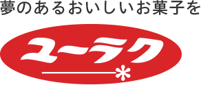
有楽製菓株式会社
Webマーケティングを中心に、サイト運用、SNS、広告・販促、広報、コラボ商品の企画まで担当。低コストで話題を最大化する施策を重ねました。
- 公式Twitterのフォロワーを3ヶ月で1万人増。リサーチツールで新規層へリーチ
- 25周年プロモーション（Matt氏起用）の企画・制作ディレクション・予算管理
- Makuakeで「至高の生ブラックサンダー」を販売。支援額2,325,500円、達成率464%
- 東京駅一番街のポップアップストアで約5万人が来場（2019年）
- マクドナルド、カラオケパセラ、「黒い砂漠」、市川海老蔵氏などとコラボ
- コラム記事でSEO対策。「ブラックサンダー+カロリー」などで上位表示
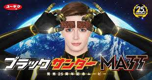
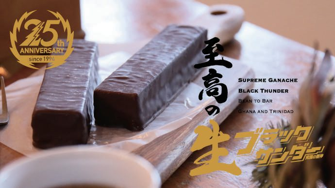
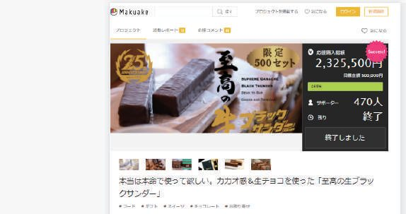
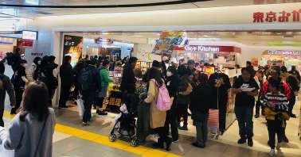
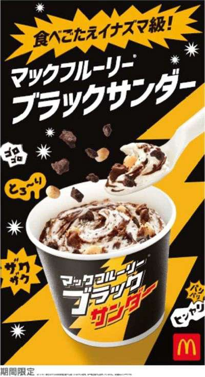
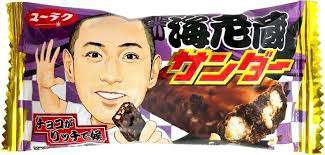
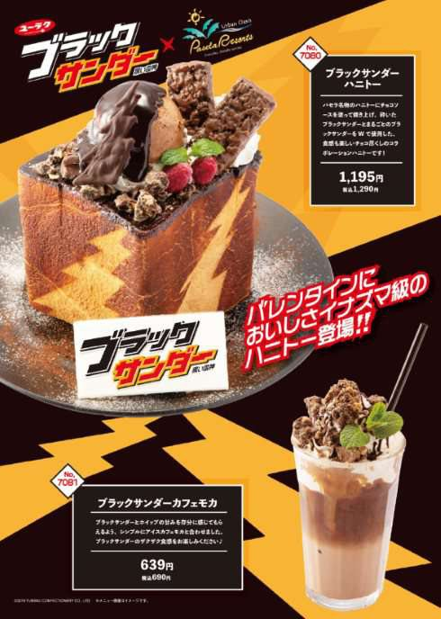
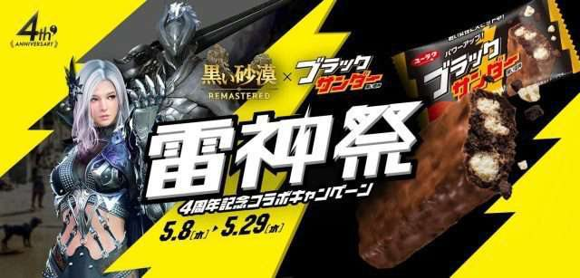
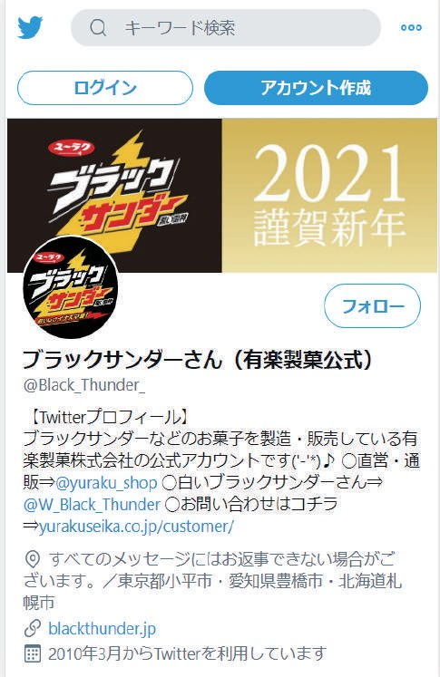
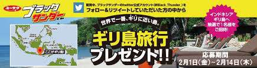